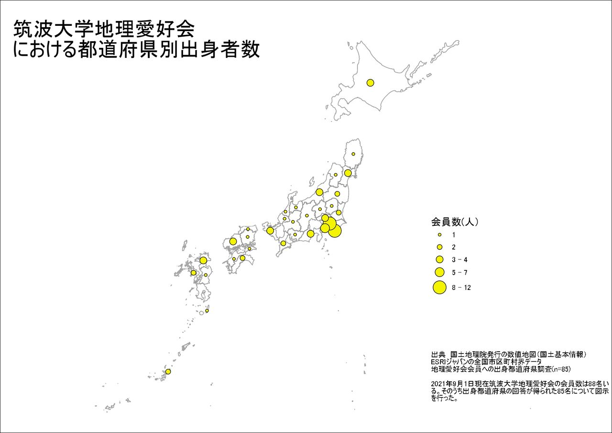
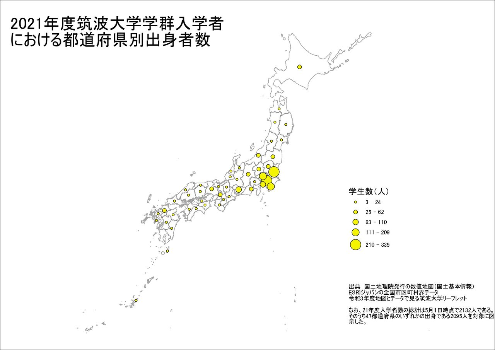
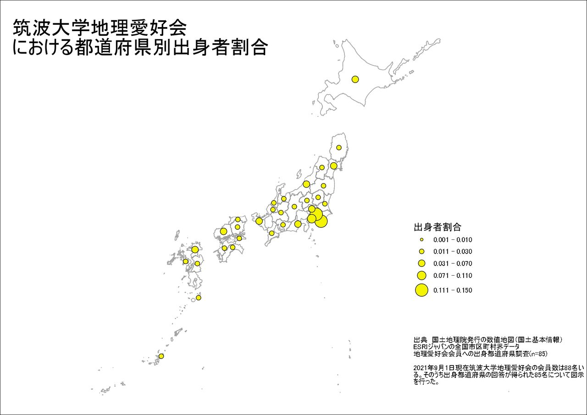
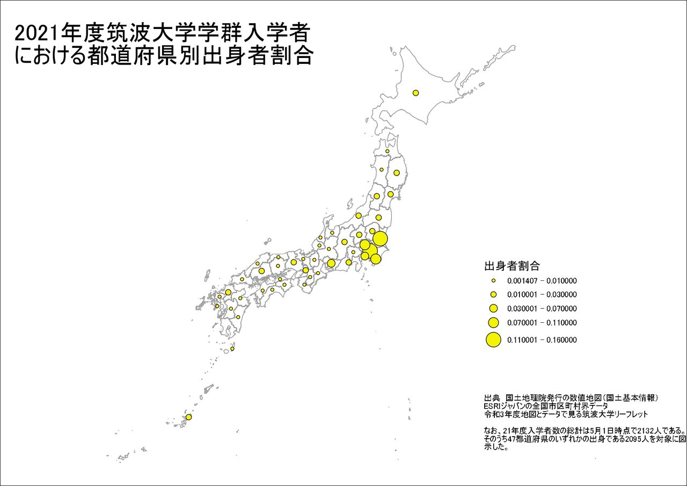

2018年10月16日に初会合?が行われ、2020年1月1日に公認化した当サークルであるが、あれよあれよと会員数は増え続け2021年9月1日現在で88名を数えるまでになった。100人の大台を突破するのは時間の問題であろう。
さて、「地理」をキーワードに集まった我々は他会員の出身というものが気になるものである。会員同士の雑談ではよく地元トークやお国自慢?が繰り広げられている。会員数が100名弱となると会員の出身都道府県は非常に多様となり、聞いていて面白い。
しかし、会員の出身都道府県はどの程度多様であるか、どこの都道府県出身の者が多いのかを調べた機会はなかった。これを機に、「つくちり会員出身都道府県MAP」を作成しこれを明らかにしたので紹介したい。
作成方法
主題図作成に用いることができるGISソフトウェアはQGISやMANDARA、ArcMAPやArcGISProなど多々あるがここではArcGISProを使用する。
使用するデータは会員に向けて調査した出身都道府県リストを用いる(n=85)。また、参考までに筑波大学に2021年度に学群入学した者の出身都道府県MAPを作成したが、これに用いるデータは令和3年度地図とデータで見る筑波大学リーフレットを参考にした。
結果
まず、当会会員の出身都道府県MAPは以下のようになった。
2021年度筑波大学学群入学者の出身都道府県MAPは以下の通りである。
なお、上記2つの地図は絶対数を表しており、クラス分類は5段階の自然分類法によっているためクラス分類によって与える印象が変わってくる可能性がある。そこで、それぞれ全体に占める割合を計算し同一のクラス分類によって図示した。
 おわりに
当会の会員の出身者数は実に33都道府県に及び、全国各地から会員が集っているということがわかった。出身者が多いのは予想通り埼玉県・東京都・神奈川県・千葉県などでありこれは筑波大学全体の傾向と一致している。
しかし、筑波大学全体の傾向と不一致である県が存在している。そう、筑波大学が所在している茨城県である。当会に所属する茨城県出身者は85名中2名であった。筑波大学に2021年度に入学した学群生2132人のうち茨城県出身者は304名であり東京都に次ぐ2位である。この傾向は毎年そう変わるものではなく、例年茨城県は1位か2位となっている。ではいったいなぜ当会に茨城県出身者は少ないのか......???
以下、2点ほど仮説を提示したい。1点目は当会が新設されたばかりのサークルであるからという理由だ。茨城県は同じ高校から多くの学生が筑波大学に進学するため、他県出身者と比べて筑波大学内に顔見知りの先輩が多く存在しているだろう。顔見知りの先輩の存在が新入生のサークル選択に影響を及ぼし、結果新設されたばかりの当会は顔見知りの先輩が少ないため相対的に選ばれづらかった可能性がある。
2点目に、新型コロナウイルスの感染拡大の影響が考えられる。この影響で昨年春以来宿泊を伴う活動ができておらず、活動場所は筑波大学から日帰りでいける範囲に限られている。そのため、茨城県出身者にとっては当会の巡検先は訪れた経験があることが多く、当会の活動が他県出身者に比べ魅力に映らなかったのかもしれない。
いずれにせよ、当会が茨城県出身者を排斥しているという事実は一切存在しない。会員一同、茨城県出身者の当会への加入を心待ちにしている。これを見ている茨城県出身者の貴方も是非入会を検討してほしい。